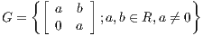
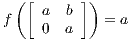

ALGEBRA 1 - Esercizio 1
baudo81[at]gmail.com
June 13, 2017
1
TESTO
Sia

Dimostrare che
G
è un sottogruppo di
GL
2
(
R
).
Dimostrare che la funzione
f
:
G
−→
R
∗
definita da

è un omomorfismo del gruppo
G
nel gruppo moltiplicativo
R
∗
.
Determinare il nucleo
ker
(
f
).
2
TEORIA
Definizione di
sottogruppo
perchè devo far vedere che l’insieme dato soddisfa le proprietà della definizione di sottogruppo.
Chi è
GL
2
(
R
)
Inversa di una matrice quadrata
3
SOLUZIONE